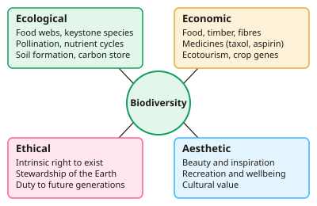

A-level Biology Year 12 · Topic 9
Conservation and human impact on biodiversity
Conservation and human impact on biodiversity asks why the variety of life matters, and what we are doing to it.
We will look at the ecological, economic, ethical and aesthetic reasons to conserve biodiversity, and how agriculture, deforestation and climate change threaten it.
Then we compare conservation methods, from nature reserves to seed banks and international agreements, and learn how to evaluate data on balancing human needs with conservation.
- 4 subtopics
- 147 questions
- Free: 9.1 notes and 10 questions
In this topic
- 9.1Why biodiversity matters: ecological, economic, ethical and aesthetic reasonsFree below · 27 questions
- 9.2Human activities that reduce biodiversity: agriculture, deforestation and climate changeOpen in Full Marks · 22 questions
- 9.3Conservation methods: in situ, ex situ, seed banks and international agreements (CITES, CBD)Open in Full Marks · 31 questions
- 9.4Balancing human needs and conservation: evaluating data and management strategiesOpen in Full Marks · 67 questions
9.1 · Free notes
Why biodiversity matters: ecological, economic, ethical and aesthetic reasons

Key points
- Biodiversity is the variety of living organisms in an area. It is considered at three levels: genetic diversity (different alleles within a species), species diversity (richness and relative abundance) and ecosystem (habitat) diversity.
- Species richness is the number of different species in a community. It ignores how many individuals there are of each, so an index of diversity gives a better measure.
- AQA index of diversity: d = N(N−1) ÷ Σn(n−1), where N = total number of organisms and n = number of individuals of each species. A higher d means a more diverse, more stable community. Some boards use Simpson's D = 1 − Σ(n/N)², where a value closer to 1 means more diverse.
- Ecological reasons: species are interdependent in food webs, and removing a keystone species can cause others to decline. Biodiversity also supports pollination, nutrient cycling, decomposition and soil formation.
- Ecosystems provide ecosystem services such as carbon storage in forests, flood control by wetlands, water purification and climate regulation. These are costly or impossible to replace artificially.
- Economic reasons: direct products include food, timber, fibres and fuel. Medicines come from wild species (aspirin from willow, quinine from cinchona, taxol from yew), and ecotourism brings in income.
- Wild relatives of crops and livestock are a genetic resource. They carry alleles for disease resistance and drought tolerance that breeders may need in future, and many species have undiscovered uses.
- High genetic diversity makes a species resilient. Genetically uniform monocultures are vulnerable to one pathogen or change, as in the Irish potato famine (1840s, blight caused by *Phytophthora infestans*). Low variation reduces the chance that some individuals can survive and adapt by natural selection.
- Ethical reasons: all species have intrinsic value and a right to exist. Humans have a duty of stewardship and a responsibility to future generations, and extinction is irreversible.
- Aesthetic reasons: biodiversity gives beauty, inspiration for art and literature, recreation, wellbeing and cultural value. Exam tip: link each reason to a named example, and do not confuse economic (resources and money) with ethical (moral duty).
In more detail
- Three levels: habitat diversity (range of habitats), species diversity (number and evenness of species) and genetic diversity (variety of alleles within a species).
- Keystone species: a species with a disproportionately large effect on its ecosystem, e.g. sea otters controlling sea urchins, which protects kelp forests.
- Worked AQA index: species counts 6, 3 and 1 (N = 10): Σn(n − 1) = 30 + 6 + 0 = 36; d = 10 × 9 ÷ 36 = 2.5.
- Ecotourism and pollination: wildlife tourism earns money for local communities; insect pollination of crops is worth billions of pounds a year worldwide.
Practice
Why biodiversity matters: ecological, economic, ethical and aesthetic reasons: 10 questions
Pick an answer to check it, or open the answer for the explanation.
1. Which is an example of genetic diversity?
- The number of species of beetle in a woodland
- The range of habitats in a national park
- The total number of individuals in a food web
- Different alleles of a coat-colour gene within one population
Show answer
D: Different alleles of a coat-colour gene within one population. Genetic diversity is the variety of alleles within a species or population. The other options describe species richness, habitat diversity and abundance.
2. Taxol, a cancer drug, was first extracted from yew bark. Which reason for conserving biodiversity does this best illustrate?
- Ethical
- Ecological
- Economic
- Aesthetic
Show answer
C: Economic. Medicines from wild species are a direct economic benefit: a useful product with commercial value that would be lost if the species became extinct.
3. A charity argues that a rare beetle with no known use should be saved because it has a right to exist. Which type of reason is this?
- Aesthetic
- Ethical
- Ecological
- Economic
Show answer
B: Ethical. Claiming intrinsic value and a right to exist, regardless of usefulness, is an ethical argument. Economic and ecological arguments depend on usefulness or function.
4. A sample has 10 individuals of species A, 5 of B and 5 of C. Using d = N(N−1)/Σn(n−1), what is the index of diversity?
- 19
- 1.5
- 0.34
- 2.9
Show answer
D: 2.9. N = 20, so N(N−1) = 380. Σn(n−1) = 90 + 20 + 20 = 130. d = 380 ÷ 130 = 2.9. The value 0.34 comes from inverting the fraction.
5. Two meadows each hold 100 insects from 4 species. X has 25 of each; Y has 97, 1, 1 and 1. Which has the higher index of diversity?
- Y, because rare species raise Σn(n−1)
- X, because individuals are evenly spread so Σn(n−1) is lower
- They are equal because both have four species
- Y, because one species is very abundant
Show answer
B: X, because individuals are evenly spread so Σn(n−1) is lower. d = N(N−1)/Σn(n−1). X: 9900/2400 ≈ 4.1. Y: 9900/9312 ≈ 1.1. Equal richness but dominance by one species gives a larger denominator and a lower d.
6. Why were Irish potato crops in the 1840s so badly damaged by blight?
- Fertiliser runoff caused eutrophication
- Genetically similar potatoes were all susceptible
- Blight is a virus, which cannot be controlled
- Mixed cropping let the pathogen spread
Show answer
B: Genetically similar potatoes were all susceptible. Potatoes were grown from near-identical tubers (a monoculture), so none had resistance alleles. Low genetic diversity left the whole crop vulnerable to one pathogen.
7. Which is an ecological reason for conserving biodiversity?
- Removing a keystone predator can cause a food web to collapse
- Species have an intrinsic right to exist
- Rainforests are beautiful and inspire artists
- Ecotourism provides income for local communities
Show answer
A: Removing a keystone predator can cause a food web to collapse. Ecological reasons concern interdependence in ecosystems, such as keystone species and food webs. The other options are economic, ethical and aesthetic.
8. Why is conserving wild relatives of crop plants important?
- They always give higher yields than modern crops
- They remove the need for pollinators
- They may carry alleles for pest resistance or drought tolerance
- They prevent crop diseases from spreading
Show answer
C: They may carry alleles for pest resistance or drought tolerance. Wild relatives hold alleles lost during selective breeding. These can be bred into crops to give resistance or tolerance, so they are a genetic resource.
9. The index of diversity of a woodland fell from 8.2 to 3.1 after conifers were planted. Which is the most valid conclusion?
- The woodland now has no native species
- Genetic diversity within each species has fallen
- Species richness and/or evenness has decreased
- The number of individuals has halved
Show answer
C: Species richness and/or evenness has decreased. The index depends on the number of species and how evenly individuals are spread. A fall shows lower diversity, but not the exact numbers or any genetic information.
10. Which statement about loss of genetic diversity in a species is correct?
- It makes the species better adapted to its environment
- It reduces the chance some individuals have alleles suited to change
- It has no effect if population size stays constant
- It increases the mutation rate
Show answer
B: It reduces the chance some individuals have alleles suited to change. Less allelic variation means fewer individuals may carry advantageous alleles if conditions change, so adaptation by natural selection is less likely.
Keep going in Full Marks
Full Marks has 27 questions on Why biodiversity matters: ecological, economic, ethical and aesthetic reasons (17 more than here), set out in practice levels. You also get notes and 3D models for all 4 subtopics of Conservation and human impact on biodiversity, plus games, timed exams and past papers.
On your exam board
- AQATopic 4: Genetic information, variation and relationships between organisms
- OCR ATopic 4.2.1: Biodiversity
- OCR BTopic 3.4: Biodiversity, classification and evolution
- EdexcelTopic 3: Classification and biodiversity
Not in the Cambridge specification.